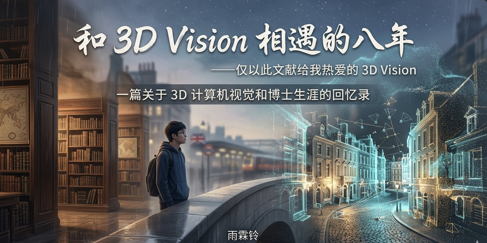

序言
此刻听着 Peder Helland 的《You & Me》的钢琴曲，耳边响着的是淅淅沥沥的雨声，内心格外平静和安宁。 由于洪水和大雪的原因，英国的火车大部分都不意外地出了意外。上上周日从 Euston 到 Glasgow 的火车也一直 delay，最后不得不放弃了当天赶往 Glasgow 的计划。
这几天的经历不太顺，但好在最终事情都能得到解决——正如我这三年的 phd 期间的 research 经历，每一个工作都经历过不顺，但最终都有一个还算好的结局。 其实很早就有了写这样一篇文章的计划，但是进入 2024 的一整年来自己都忙于各种事情，到接近年末总算排出了一些时间来完成它。大概是快要告别自己的学生生涯了， 感觉自己像是人到迟暮之年，总想着之后回忆起往昔的时候，能记得那些峥嵘岁月。而我的前 3.3333 分之一的峥嵘岁月，又有 3.3333 分之一的时间是在 3D 视觉的陪伴下度过的。
阅读指引: 对 3D 视觉不感兴趣的同学请跳过下面三段，对 phd 不感兴趣的同学请跳过全文，对作者感到不适的请拉黑， 对此文感兴趣的欢迎多读两遍，对作者感兴趣的就请不要再感兴趣了。
缘起
时间拨回到 2016 年末。那一年似乎是很特殊的一年：自动驾驶如火如荼，Deepmind 推出了 AlphaGo、李世石九段和柯洁输的一塌糊涂，Niantic Lab 在那一年发布了 Pokemon Go，英国举行了全民公投决定脱欧……那时候的我刚处理完各种升学事宜，尚不知计算机视觉为何物，更不知 3D 视觉之神奇。 一段机缘巧合之下，我接触到了 3D 视觉，于是每日便在图书馆里啃着被尊为 3D 计算机视觉圣经的《Multiple View Geometry in Computer Vision》。
尽管在啃这本书的一开始甚为懵懂，但仍然在极大的好奇心驱使下让自己的大脑给多视图几何开垦出了一片荒地。 科学上的经典之所以成为经典，在于它们在时间长河里能够不断地给科学知识体系提供坚实的地基和壁垒。 二十多年来，这本书一直都是传统三维视觉人手中的必备读物。即使在深度学习兴起之后、各种大模型如火如荼的今天， 这本书仍然不乏它的深刻价值和意义。
寻路之旅
多视图几何一直以来都是传统三维重建的必备知识。在传统三维重建统治之下的当年， 我知道了怎么能够从一堆手机或者相机拍摄的二维图片中得到当时场景的三维结构、甚至我们能够知道相机拍摄的角度和位置。 这个被称为 Structure from Motion (SfM) 的步骤在当年由康奈尔大学和微软联合发起的 photo tourism 项目的推动下， 在很多研究者的心里都刻下了一个深深的烙印。
作为一项点对点来说较为成熟的技术，SfM 在 2017-2020 年期间可以说备受冷落。在我的记忆里，那时候也只有港科大权龙老师、ETH 的 Marc 组、还有中科院自动化所的申老师组一直在坚持不懈地从事这方面的研究。这些组都是颇有风骨的。因为在我想来，学术道路上追求热点很容易，坚持一项不再备受关注的方向则需要自己的内心有一个宏大的愿景和对这个方向持之以恒的热爱。而 2017-2020 年的硕士三年，我的研究方向便是 Structure from Motion。这个方向当年在很多人看来，似乎是“49 年入国军”。 一些很现实的问题便摆在眼前：现在大家都在做 deep learning，SfM 这个东西毕业了怎么找工作？但是当时自己并没有考虑这么多，仅凭一腔喜爱，只是希望能把 SfM 做到 City Scale 的级别——如果我能有全世界所有地点的图片，那把它们都重建成三维模型，这该是一件多么酷的事情！整个硕士期间我都朝着这个目标努力着。但由于缺乏正确的科研训练和指导，前期基本上都是自己摸索，即使小有成果，也没有形成一个系统性的思维和 troubleshooting 追根溯源的良好习惯。
当时有两段经历改变了我在科研上的思维习惯。第一段便是遇见了中科院自动化所的申抒含老师和崔海楠老师。这一段经历也是机缘巧合。申老师所带领的三维视觉组在当时已经很有名气，崔老师更是在 SfM 方面颇有建树。研二下有一次去自动化所找到申老师聊了聊当时项目的一些进展，之后申老师便让我和崔老师深入交流。记得当时给崔老师介绍完当时一个工作的大致思路后，崔老师很快便提出了方法中存在的问题和一些缺陷。进一步的，崔老师跟我介绍了当他遇到一个问题的时候是怎么去分析问题、解决问题的。这段交流虽然不足两小时，但对于当时缺乏足够指导的我来说却是醍醐灌顶。第二段经历便是在图森实习期间遇见了季哥。季哥在传统几何视觉，尤其是 relative pose 的 optimal 估计方面研究颇深。季哥作为我当时在图森实习期间的 mentor，只要当天在办公室，便会每天下午找我进行交流，问我有何进展、是否遇到了什么困难。在之后更是手把手教我从论文布局、遣词造句、表格样式等等方面应该如何撰写一篇合格的学术论文。在如今几乎 phd 入门就能够抓出一大把握一两篇顶会的时代，很难想象硕士第二年即将结束的时候才刚刚在科研上起步。这段时间的经历对我来说就像是一个刚踏入大千世界的童子，初次体验这世间的美好和繁华。可以说没有图森实习的这段经历，我断不会有之后想要读 phd 的念头。
从 Photogrammetry 到 Neural Rendering
在我刚入门 3D 视觉时候，传统的 photogrammetry 技术已经达到了顶峰。无论是工业界还是学术界，可挖掘的地方都不太多。从 SfM 获取相机姿态和稀疏点云开始，到用 Multi View Stereo 获取深度图和稠密点云，再到 Poisson 表面重建或者 Delaunay 三角化得到三维场景的表面结构，最后纹理贴图加后期修模……这样一套下来，其实已经能够得到让人较为满意的三维模型了。
但是，我们总觉得 photogrammetry 得到的模型缺了些什么。没错，是这个世界的真实度！无论是线上的 Polycam 早期重建的模型，还是虽然贵的一批但在工业界仍然受到广泛使用的 context capture，用户都能一眼鉴别出来三维模型和真实世界。2020 年，一篇 "NeRF: Representing Scenes as Neural Radiance Fields for View Synthesis" [ECCV 2020] 的论文让人看到了通过 neural rendering 来混淆数字三维世界和真实世界的可能，无数的科研人员也开始朝着这个方向蜂拥而至。2020 年正是我硕士毕业那年。由于当时自己对深度学习和图形学都不太感冒，自然而然，也没有对这个方向有所关注。甚至直到 phd 的第一个学期，自己都对 NeRF 所知不多；一直到第一个学期结束后，自己才慢慢开始了解这个方向。
技术的更迭是很快的，在 deep learning 兴起之后甚至又加快了很多倍。从最初用 MLP 隐式建模的 NeRF，到后来显式编码的 Plenoxels [CVPR 2022]， 以及混合编码的 InstantNGP [SIGGRAPH 2022] 和 TensoRF [ECCV 2022] ，以及很多其他出色的工作，volume rendering 的渲染速度和质量一再提升。 而这些进展都是在短短的两三年之间就完成的。如今，使用 point rendering 的 3D Gaussian Splatting [SIGGRAPH 2023] 又取代了 NeRF，开始风靡学术界和工业界。
技术更迭如此之快，难道除了引领学术热潮那些顶级学者，我们只能随波逐流吗？我应该和很多入行的人一样都曾经迷茫过。我们总担心自己曾经学习过的东西在某些时刻就被彻底淘汰了。 但是，真的是这样吗？本质上来讲，Plenoxels [CVPR 2022] 这类无须 MLP 的方法和最原始的 3D GS 只能归为参数化学习方法，最关键的是底层的图形学技术 (volume rendering 和 volume splatting) 以及优化算法。我一直坚信经典是永不过时的——至少目前来讲是这样。volume rendering 和 volume splatting 都是已经发展了几十年的成熟的技术；数值优化算法更是历久弥坚——后来的衍生各种显隐式结合的 NeRF 以及 3D GS 变体，似乎都在告诉我们，传统和学习的结合才是当前最优解。
不过，又有一个问题来了：在下一代技术 3D 视觉的技术浪潮到来之前，我们只是在不停的新瓶装旧酒吗？这个问题似乎很难找到一个很好的回答。也许在我有生之年也无法找到这个问题的答案。不过，谁又知道呢。 也许下一波颠覆以往认知的技术浪潮很快就会来临，或者已经来临了。
从 Building Rome in a Day 到 in a few Seconds
让我们暂时回到三维重建最初的起点。 最开始The University of Washington 和 Microsoft Research 的研究员们想做一个VR的景点在线游览系统。于是，他们便从Flickr上爬取了许多个著名景点的数万张照片 进行重建。其中一个著名的景点就是古罗马的斗兽场。这个重建系统最初只是能看到一些camera pose 和离散的稀疏三维点 -- 这也是最初始的一套完整大规模重建系统的雏形。这套 系统为了完成数万张照片的重建，做了很多系统层级的优化。SfM最重要的两个前置步骤是特征提取和匹配。特征匹配这一步在图片数量众多的时候尤为耗时 (exhaustive matching的 时间复杂度为 O(n^2))。系统的主要优化工作便是如何设计一个高效的分布式系统来提升特征匹配的效率。当然，最后的 bundle adjustment 这一步也很耗时，但在分布式优化算法出来 之前，我们也只能在单台服务器上干等着。后来的一个SfM方面的集大成的工作便是COLMAP [CVPR 2016]了。当然，这期间也有一些优秀的开源SfM工作 (比如OpenMVG, TheiaSfM)。
时间再回到2024年一月初。为什么是这个时间点呢？因为2023年12月底，DUSt3R [CVPR 2024] 的第一版论文出现在了arXiv，我在圣诞假期之后第一时间关注到了这个工作。 最初看到DUSt3R的网络架构的时候觉得平平无奇，而且心里想，这和我们 ICCV 2023 的 DReg-NeRF 结构不是几乎一模一样吗？但是最后看到实验部分的时候，心里被震撼到了： 在大量数据的训练之下，DUSt3R 在 3D 任务上的泛化性达到了一个前所未有的高度! 特别是我在关注到 DUSt3R 的 pose 精度在一些具有挑战的数据集上大幅超过了 COLMAP + Superpoint + SuperGlue。尽管当时的 DUSt3R 只能做端到端的二视图重建 -- 这个问题也在一年后 VGGT 和 CUT3R 的出现而解决 (当然同期也有不少类似的工作， 比如 Fast3R (CVPR 2025))，重建 100 张以上的图片也已经不是问题；而且随着近期的 ZipMap (CVPR 2026) 和 LoGeR (arXiv 2026) 的出现将端到端的 neural reconstruction 的重建数据规模和时间都往前推进了更大的一步。
3D 的困境 -- What is Next?
从我刚入门开始，就有人不断告诉我，SfM 这个问题解决了；甚至在我21年面试一家创业公司的时候面试官告诉我: "SfM已经是个解决的问题了，不考虑做MVS吗？" 那么问题来了，SfM 真的解决了吗？从理论上来说，yes! 多视图几何的理论早已建立的非常完善 -- 但是面对实际情况如何呢？我们知道现实世界中有大量对纯视觉不友好的 例子，弱纹理，重复pattern，移动的物体，窄基线，等等，这些都会导致几何算法的失败。当我们考虑挑战性的场景的时候，我很难得出 SfM 是一个已解决的问题这一结论。 那么，我们又回到 VGGT 这一类 neural reconstruction 的方法，他们可以解决目前的困境吗？答案显然是不显然的：在有足够多(数据规模和数据丰富度)的训练数据的情况下， 也许我们能很轻易得出一个肯定的答案；但是，现实情况是，即使当前最好的 neural reconstruction 方法，也严重依赖 COLMAP 所得到的结果作为伪真值 -- 更糟糕的是， 3D 的 scaling up 相对文本以及 2D 来说要困难的多得多，目前我们仍然无法得出 3D 的 scaling law 得到充分验证，3D 方向的智能涌现仍未真正涌现。未来是什么 情况很难说，但是如果科研人员相信 3D 是这个世界的终极答案的话 (当然，我们已经知道 Vincent Sitzmann 是不相信的)，这个问题我们终究会有一个结论。
关于读博的抉择
为什么不读个 phd？
好巧不巧，硕士毕业那年新冠开始肆虐全球，不少学生不得不因此推迟了出国的计划。不过，这其中不包括我。硕士毕业之后我选择了工作。直到现在，有不少同学朋友都会问我，当时为什么没选择读 phd。那当时硕士毕业后为什么没有读 phd 呢？很多时候我都没有直接说出原因，而只是浅浅地以当时由于新冠打乱了自己的留学计划将同学朋友糊弄了过去。新冠当然是一个原因，但不是主要原因。 毕业前半年其实在准备雅思，自学一个月后也只拿到了 6.5，之后想再接着考的时候才轮到新冠出来甩我一记耳光。真正的原因其实是：当时的我并没有一个明确的、完整的可以作为 phd 课题的方向。SfM 在当时的计算机视觉领域已经不受重视，再把它作为一个完整课题大概是很难发表出顶会级别的论文。其他方向自己当时又不太感兴趣。
说到这里不得不提毕业那年套磁过 Torsten Sattler，彼时他刚从瑞典搬到捷克。捷克的 CIIRC 在三维重建领域也算是独树一帜，但功利的我却没有将这个无法出现在 QS 榜单上的学校纳入未来计划之中。不过 Torsten 当时很诚恳地邀请了我进行远程面试。面试中 Torsten 问我之后 phd 想做什么方向。当时我很诚实地回答：自己对三维视觉的很多方向都很感兴趣，但是很迷茫之后要做什么，可能是 SfM，也可能是用 deep learning 来解决三维视觉方面的问题。Torsten 当时并没有给我发 offer，我记得他说：“要让我们给你发 offer 很容易，但是关键是你觉找到自己真正感兴趣的东西。” 好吧，我觉得 Torsten 和我应该合不来。对于向来左耳进右耳出的我来说，我仍然在之后的 phd 申请中没有找到自己真正感兴趣的东西。
为什么要读 phd？
以上提到的原因也只是当时来讲左右自己决定的主要因素。数值优化中有个 primal problem 的概念，当 primal problem 不好求解的时候，我们会寄希望于求解它的 dual problem。关于“为什么不读个 phd”的 dual problem 便是：为什么要读 phd？我觉得这是个很好回答的问题。那我们先从世俗的意义上来讲讲： (1) 我们暂时不用工作，身上的牛马气息可以淡一些——虽然科研牛马也是牛马的一种特殊形式。 (2) 我们毕业之后可以谋求一份更高薪的工作。科研牛马的经历是成为高薪牛马的充分不必要条件。 (3) 读博意味着可以接触到更“高端”的学术社交圈子。其实我很不喜欢将“高端”和“学术”联系起来——最纯粹的学术成果就应该像 1+1=2 那样，最终可以朴素到所有人都能在生活中接触和运用。
我考虑的世俗的因素是 (2)。但其实这并无法让我下定决心。让我决定读 phd 的是非世俗上的意义：仅仅是出于对三维视觉的喜爱，让我想在这个领域能够再纯粹的钻研几年。我不知道几年之后的我会不会后悔，我只知道如果不读 phd 的话未来的我一定会后悔。那就去读个 phd 吧。 很多认识我的同学朋友都觉得我的 phd 读的很顺利。从表面上看是这样子，实际上也的确如此（并不，此处手动狗头）。刚入学的前半年，由于自己对 deep learning 所知不深，大部分时间都花在了上课这方面。在当时的情况下，我相当于是已经落后了大部分人好几道起跑线。在第一个学期结束之后，自己仍然没有很快地找准方向，因此也曾焦虑过。 好在这种情况只持续了两个多月。接触 neural rendering 之后的我被这个方向深深吸引，一头扎进去便不顾其他。都说兴趣是最好的老师——在科研上的确如此。即使遇到暂时解决不了的困难，也相信总有那么一刻或者一天这个问题会得到解决。
结尾
此刻依旧夜深人静。脑海里蓦然闪过一句词：“世事漫随流水，算来一梦浮生”。这句词出自李煜的《乌夜啼·昨夜风兼雨》。我记得离开之前北京的大雪，在寒冷的街头大家在夜色里行色匆匆； 还记得疫情封城的上海小区，每家每户每天都在翘首期盼明天就会解封。回想过去，仿佛就在昨天；而我从来没离开过一样。这段旅途即将结束，也即将成为我再也回不去的学生时代。 我不确定这段经历会不会是我一生中最精彩的一段，但是即使二、三十年后，再回顾这段时光，我觉得我仍然能够满怀自豪的吟诵出这句：“恰同学少年，风华正茂，书生意气”！
Eight Years with 3D Vision — Dedicated to My Beloved 3D Vision (Translated by DeepSeek)
Prologue
At this moment, listening to the piano piece "You & Me" by Peder Helland, accompanied by the sound of pattering rain outside, my heart feels exceptionally calm and peaceful. Due to floods and heavy snow, most trains in the UK, unsurprisingly, encountered disruptions. The train from Euston to Glasgow last Sunday was delayed repeatedly, and I ultimately had to abandon my plan to reach Glasgow that day.
The past few days haven't been smooth sailing, but fortunately, things eventually worked out — much like my research experiences during these three years of my PhD. Every project faced its rough patches, but each concluded with a reasonably good outcome. I've actually had the idea for this article for a while, but throughout 2024, I was caught up in various tasks. Now, as the year draws to a close, I've finally carved out some time to write it. Perhaps it's because my student life is nearing its end; I feel like someone in their twilight years, wanting to remember the remarkable times when I look back. And a significant portion—3.3333%—of my early, eventful years was spent in the company of 3D vision.
Reading Guide: If you're not interested in 3D vision, please skip the next three paragraphs. If you're not interested in PhD life, please skip the entire article. If the author makes you uncomfortable, please feel free to block me. If you find this article interesting, you're welcome to read it more than once. If you're interested in the author... please kindly reconsider.
The Beginning
Let's turn back the clock to the end of 2016. That year seemed particularly eventful: autonomous driving was gaining momentum, DeepMind introduced AlphaGo causing Lee Sedol and Ke Jie to suffer resounding defeats, Niantic Lab released Pokémon GO, and the UK held its referendum deciding to leave the EU... At that time, I had just finished dealing with various university applications and knew nothing about computer vision, let alone the marvels of 3D vision. Through a serendipitous opportunity, I was introduced to 3D vision and subsequently spent my days in the library poring over what is revered as the bible of 3D computer vision, "Multiple View Geometry in Computer Vision."
Although my initial understanding while reading the book was quite rudimentary, driven by immense curiosity, my mind began cultivating a foundational understanding of multi-view geometry. The reason classics in science become classics is that they continuously provide solid foundations and cornerstones for the scientific knowledge system over time. For over two decades, this book has remained essential reading for those in traditional 3D vision. Even in the era following the rise of deep learning and amidst the fervor surrounding various large models today, this book still holds profound value and significance.
The Journey of Discovery
Multi-view geometry has long been essential knowledge for traditional 3D reconstruction. During the era dominated by traditional 3D reconstruction, I learned how to derive the three-dimensional structure of a scene from a collection of 2D images taken by phones or cameras, and even determine the angles and positions from which the photos were captured. This process, known as Structure from Motion (SfM), left a deep impression on many researchers, propelled by the Photo Tourism project initiated by the University of Washington and Microsoft.
As a relatively mature technology on a point-to-point basis, SfM experienced a period of relative neglect between 2017 and 2020. As I recall, only a few groups—like Professor Long Quan's at HKUST, Marc Pollefeys' group at ETH, and Professor Shen Shuhan's group at the Institute of Automation, Chinese Academy of Sciences (CASIA)—persistently pursued research in this area. These groups demonstrated remarkable integrity and dedication. It seemed to me that chasing research trends is easy, but sticking with a direction that's no longer in the spotlight requires a grand personal vision and a sustained passion for that field. My own master's research from 2017 to 2020 focused precisely on Structure from Motion. Back then, many viewed this choice as akin to "joining the Nationalist army in 1949" – backing the losing side. A very practical question arose: with everyone focused on deep learning, what kind of job could I find after graduation with a focus on SfM? However, I didn't dwell on this much at the time. Driven purely by passion, I simply hoped to push SfM to a City Scale level – imagining how incredibly cool it would be to reconstruct 3D models from images of every location worldwide! I worked towards this goal throughout my master's. But lacking proper research training and guidance, my early efforts were largely self-directed. Even when I achieved minor results, I hadn't developed systematic thinking or good habits for tracing problems to their roots.
Two experiences during that period significantly changed my research mindset. The first was meeting Dr. Shen Shuhan and Dr. Cui Hainan from the Institute of Automation, CASIA. This encounter was also fortuitous. Professor Shen's 3D vision group was already well-known, and Dr. Cui had made significant contributions to SfM. During a visit to the institute in the second year of my master's, I discussed my project's progress with Professor Shen, who then suggested I have an in-depth discussion with Dr. Cui. I remember presenting the general idea of my current work, and Dr. Cui quickly pointed out potential issues and flaws in the approach. Furthermore, he explained his methodology for analyzing and solving research problems. Although this exchange lasted less than two hours, it was an eye-opener for me, who had lacked sufficient guidance. The second experience was interning at TuSimple, where I met Ji-ge (Dr. Ji Zhao). Dr. Zhao had deep expertise in traditional geometric vision, particularly in optimal estimation for relative pose. As my mentor during the internship, whenever he was in the office, he would meet with me daily to discuss my progress and any difficulties. Subsequently, he meticulously guided me on how to structure a paper, choose wording, format tables, and all aspects of writing a qualified academic paper. In an era where many PhD students seem to grasp a couple of top-tier conference papers early on, it's hard to imagine that I was just starting my research journey towards the end of my second master's year. This period felt like a child stepping into a vast new world, experiencing its beauty and richness for the first time. Without the TuSimple internship, I doubt I would have ever considered pursuing a PhD.
From Photogrammetry to Neural Rendering
When I first started in 3D vision, traditional photogrammetry techniques had already peaked. There seemed to be limited room for further exploration in both academia and industry. The pipeline—from obtaining camera poses and sparse point clouds via SfM, to generating depth maps and dense point clouds with Multi-View Stereo, then reconstructing the 3D surface structure using Poisson surface reconstruction or Delaunay triangulation, and finally applying texture mapping and post-editing—could already produce reasonably satisfactory 3D models.
However, we always felt something was missing from the models produced by photogrammetry. That something was the realism of the world! Whether it was the early models from online platforms like Polycam or the expensive but industry-standard software ContextCapture, users could easily distinguish between the 3D model and the real world. In 2020, the paper "NeRF: Representing Scenes as Neural Radiance Fields for View Synthesis" [ECCV 2020] hinted at the potential of neural rendering to blur the line between the digital and real worlds, prompting a massive influx of researchers into this area. 2020 was the year I graduated with my master's. Not being particularly drawn to deep learning or graphics at the time, I naturally didn't pay much attention to this direction. In fact, I knew little about NeRF until well into my first PhD semester; it was only after the first semester that I gradually began exploring this field.
Technological iteration is rapid, accelerating even further after the rise of deep learning. From the original MLP-based implicit representation of NeRF, to the explicit encoding of Plenoxels [CVPR 2022], hybrid representations like InstantNGP [SIGGRAPH 2022] and TensoRF [ECCV 2022], and numerous other excellent works, the speed and quality of volume rendering improved dramatically. All these advances occurred within just two or three years. Today, 3D Gaussian Splatting [SIGGRAPH 2023], based on point rendering, has succeeded NeRF, becoming a new sensation in both academia and industry.
With such rapid technological shifts, are we, aside from the top scholars leading these trends, simply destined to go with the flow? I suspect many entering this field, including myself, have felt this uncertainty. We constantly worry that what we've learned might become obsolete overnight. But is that really the case? Essentially, methods like Plenoxels [CVPR 2022] that don't use MLPs, and the original 3D GS, can be categorized as parametric learning methods. The core components are the underlying graphics techniques (volume rendering and volume splatting) and optimization algorithms. I've always believed that classics never go out of style – at least, not yet. Volume rendering and volume splatting are mature techniques developed over decades; numerical optimization algorithms are even more enduring. The subsequent emergence of various hybrids combining implicit and explicit representations in NeRF and 3D GS variants seems to suggest that combining traditional knowledge with learning is currently the optimal path.
However, another question arises: before the next major wave of 3D vision technology arrives, are we simply putting old wine in new bottles? This seems like a difficult question to answer well. Perhaps I won't find the answer in my lifetime. But then again, who knows? The next wave of technology that upends previous understanding might arrive very soon—or perhaps it has already arrived.
From Building Rome in a Day to in a Few Seconds
Let's briefly return to the very beginning of 3D reconstruction. Researchers at the University of Washington and Microsoft Research initially aimed to create an online VR sightseeing system. To do this, they crawled tens of thousands of photos of famous landmarks from Flickr for reconstruction. One famous site was the Colosseum in Rome. This early system initially only displayed camera poses and sparse 3D points—the prototype for the first complete large-scale reconstruction system. To handle the reconstruction of tens of thousands of photos, the system incorporated many optimizations at the system level. The two most critical preliminary steps in SfM are feature extraction and matching. Feature matching, in particular, is extremely time-consuming when dealing with a large number of images (exhaustive matching has O(n²) time complexity). The main optimization effort was designing an efficient distributed system to speed up feature matching. Of course, the final bundle adjustment step was also time-consuming, but before distributed optimization algorithms emerged, we could only wait idly on a single server. A later comprehensive work in SfM was COLMAP [CVPR 2016]. Of course, there were also other excellent open-source SfM projects during this period (like OpenMVG, TheiaSfM).
Now, let's jump to early January 2024. Why this specific time? Because the first version of the DUSt3R [CVPR 2024] paper appeared on arXiv in late December 2023, and I noticed it right after the Christmas holidays. Initially, when I saw DUSt3R's network architecture, it seemed unremarkable, and I thought, "Isn't this almost identical to our ICCV 2023 DReg-NeRF structure?" But upon seeing the experimental results, I was stunned: trained on massive amounts of data, DUSt3R achieved an unprecedented level of generalization on 3D tasks! I was particularly struck by its pose accuracy on several challenging datasets, significantly surpassing COLMAP + Superpoint + SuperGlue. Although the initial DUSt3R could only perform end-to-end two-view reconstruction—a problem later addressed within a year by VGGT and CUT3R (along with several similar works like Fast3R [CVPR 2025]), enabling reconstruction from over 100 images. Furthermore, recent works like ZipMap [CVPR 2026] and LoGeR [arXiv 2026] have pushed the scale and speed of end-to-end neural reconstruction even further.
The Dilemma of 3D -- What is Next?
Ever since I started in this field, people have been telling me that the SfM problem is solved. Even during an interview with a startup in 2021, an interviewer told me: "SfM is already a solved problem, have you considered working on MVS instead?" So, the question is: is SfM truly solved? Theoretically, yes! The theory of multi-view geometry has been firmly established for a long time. But how does it fare in practice? We know the real world is full of scenarios unfriendly to pure vision: low texture, repetitive patterns, moving objects, narrow baselines, etc. All these can cause geometric algorithms to fail. When considering challenging scenes, I find it hard to conclude that SfM is a solved problem. So, can methods like neural reconstruction (e.g., VGGT) solve the current predicament? The answer is decidedly non-obvious: given sufficient training data (in scale and diversity), we might easily answer affirmatively. However, in reality, even the best current neural reconstruction methods heavily rely on results from COLMAP as pseudo-ground truth. More critically, scaling up 3D data is significantly more difficult than scaling text or 2D data. Currently, we still cannot definitively say that scaling laws for 3D have been fully validated; the emergence of intelligence in the 3D domain hasn't truly occurred yet. It's hard to predict the future, but if researchers believe that 3D is the ultimate answer for understanding the world (though we know Vincent Sitzmann, for instance, doesn't necessarily agree), we will eventually reach a conclusion on this matter.
The Decision to Pursue a PhD
Why Not Do a PhD?
Coincidentally, the year I graduated with my master's, the COVID-19 pandemic began to spread globally, forcing many students to delay their study-abroad plans. However, I wasn't among them. After graduating, I chose to work. Since then, many classmates and friends have asked why I didn't pursue a PhD at that time. I often haven't given the real reason, simply brushing it off by saying the pandemic disrupted my study plans. While COVID was a factor, it wasn't the main reason. In the six months before graduation, I had been preparing for the IELTS, scoring 6.5 after a month of self-study. Just as I was planning to retake it, the pandemic emerged and thwarted my plans. The real reason, however, was that I didn't have a clear, complete research direction suitable for a PhD topic. SfM was already being overlooked in computer vision, and pursuing it as a primary PhD topic would likely make it difficult to publish top-tier conference papers. At the time, I wasn't particularly interested in other directions.
Speaking of which, I must mention reaching out to Torsten Sattler that year, right after he had moved from Sweden to the Czech Republic. The CIIRC in the Czech Republic had a unique standing in 3D reconstruction, but my more功利 (pragmatic/status-conscious) side at the time led me not to seriously consider a university that didn't appear on the QS rankings. However, Torsten sincerely invited me for a remote interview. During the interview, he asked what direction I wanted to pursue for my PhD. I honestly replied that I was interested in many aspects of 3D vision but was quite unsure about my specific focus—it could be SfM, or using deep learning to solve 3D vision problems. Torsten didn't extend an offer. I recall him saying, "It's easy for us to give you an offer, but the key is for you to find what you're truly passionate about." Well, I thought Torsten and I probably wouldn't have been a good fit. As someone who often lets things go in one ear and out the other, I still hadn't found my true passion by the time of my subsequent PhD applications.
Why Do a PhD?
The reasons mentioned above were the main factors influencing my decision at that time. In numerical optimization, we have the concept of a "primal problem." When the primal problem is difficult to solve, we turn to its "dual problem." The dual problem of "Why not do a PhD?" is: "Why do a PhD?" I think this is easier to answer. Let's start with the worldly perspectives: (1) We temporarily postpone full-time employment, allowing us to be slightly less burdened by the 'corporate drudge' label—although research students are a special kind of academic 'drudge' themselves. (2) Graduating with a PhD can potentially lead to higher-paying jobs. The experience of being a research 'drudge' is a sufficient but not necessary condition for becoming a well-paid 'drudge' later. (3) Pursuing a PhD means gaining access to more "prestigious" academic networks. I actually dislike linking "prestigious" with "academic"—the purest research outcomes should be as simple and accessible as 1+1=2, eventually usable by everyone in their daily lives.
The worldly factor I considered was (2). But that alone wasn't enough to make up my mind. What ultimately pushed me to pursue a PhD was the non-worldly significance: simply my love for 3D vision, and the desire to delve deeper into this field for a few more years in a relatively pure research environment. I don't know if I'll regret this decision years from now; I only know that if I didn't do a PhD, my future self would definitely regret it. So, I decided to go for it. Many classmates and friends who know me think my PhD journey has been smooth. Superficially, it might seem that way, and in reality, it also did (not really, just kidding... insert doge face). In the first six months after starting, because my knowledge of deep learning was shallow, I spent most of my time on coursework. At that point, I was effectively lagging behind many others. Even after the first semester ended, I still hadn't found my direction quickly, leading to some anxiety. Fortunately, this phase only lasted a little over two months. Once I encountered neural rendering, I was deeply captivated by the field and immersed myself completely. They say interest is the best teacher—and in research, it truly is. Even when facing seemingly insurmountable difficulties, I always believed that someday, somehow, the problem would be solved.
Epilogue
Once again, it's late at night, and all is quiet. A line from a poem suddenly flashes through my mind: " worldly affairs drift like water, fleeting as a dream." This line comes from Li Yu's "Crows Crying at Night: Wind and Rain Last Night." I remember the heavy snow in Beijing before I left, people hurrying through the cold, dark streets. I also recall the locked-down neighborhoods in Shanghai during the pandemic, every household eagerly awaiting news of the lockdown's end day after day. Looking back, it all feels like yesterday; it's as if I never left. This journey is about to end, and will soon become my irretrievable student days. I'm not sure if this experience will be the most brilliant chapter of my life, but even two or three decades from now, when I look back on this time, I believe I will still be able to recite with pride: "We were young students, in the prime of our youth, full of scholarly spirit!"
Comments